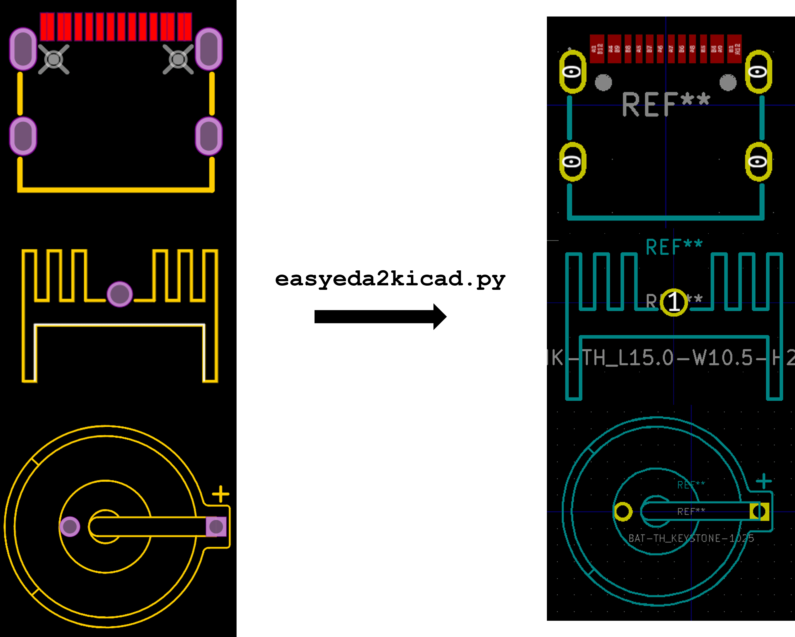

EasyEDA to KiCad Converter

Most parts I use for JLCPCB assembly come from LCSC, but I design in KiCad.
easyeda2kicad, written by uPesy
Electronics, does the annoying conversion work: it downloads EasyEDA's symbol,
footprint, and 3D-model data and writes KiCad libraries.
My fork is barely a fork. My only commit, c639590, changes a newline in
requirements.txt. Steffen Wittemeier wrote the User-Agent and Referer
header fix in upstream commit 95e3e0e. An older version of this page credited
that fix to me, which was wrong.
What I actually wrote is the tooling around the converter in
gs-kicad-lib. It depends on
easyeda2kicad>=1.0.1 and adds:
- an interactive importer with fuzzy library and footprint search;
- a choice between generated, existing, or no footprint link;
- tidying of KiCad fields and the procurement metadata I care about;
- a check that every symbol has the required fields; and
- setup tooling that registers the libraries and path variables with KiCad.
Now I can pick an LCSC part, decide where its files go, clean up the fields, and run the same checks as the rest of my library, instead of babysitting every import.
Generated footprint:
